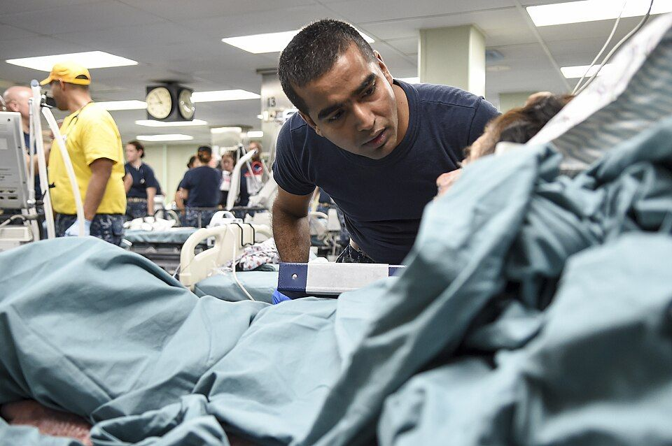

Soporte vital avanzado
Las guías europeas de 2025 mantienen el algoritmo de 2021 con más énfasis en compresiones de calidad con mínimas interrupciones, la colocación correcta de los parches y la adrenalina precoz en los ritmos no desfibrilables.
Revisado en noviembre de 2026 · Fuentes al final de la página

.jpg){kind=link}
La secuencia
- Confirmar la parada (no responde y no respira con normalidad), pedir ayuda y el desfibrilador y empezar compresiones: 100–120 por minuto, 5–6 cm de profundidad, 30:2.
- Colocar los parches en cuanto llegue el desfibrilador, sin parar las compresiones. El parche lateral va debajo de la axila, en la línea medioaxilar; el otro, debajo de la clavícula derecha. También se puede usar la posición anteroposterior.
- Analizar el ritmo con una pausa breve.
Ritmos desfibrilables: fibrilación ventricular y taquicardia ventricular sin pulso
- Una descarga y reanudar inmediatamente las compresiones durante 2 minutos, sin comprobar el pulso. La pausa para la descarga debe durar menos de 5 segundos.
- Adrenalina 1 mg intravenosa o intraósea después de la tercera descarga y luego cada 3–5 minutos.
- Amiodarona 300 mg después de la tercera descarga y 150 mg después de la quinta. La lidocaína (100 mg y 50 mg) es la alternativa.
Ritmos no desfibrilables: asistolia y actividad eléctrica sin pulso
- Adrenalina 1 mg lo antes posible y luego cada 3–5 minutos.
- Compresiones durante ciclos de 2 minutos y nueva valoración del ritmo.
Causas reversibles: las 4 H y las 4 T
| Hipoxia | Trombosis coronaria o pulmonar |
| Hipovolemia | Neumotórax a tensión |
| Hipo o hiperpotasemia y otros trastornos metabólicos | Taponamiento cardiaco |
| Hipo o hipertermia | Tóxicos |
La ecografía a pie de cama puede ayudar a identificarlas si la hace alguien con experiencia y sin alargar las pausas.
Vía aérea y capnografía
- Se empieza con técnicas básicas (cánula orofaríngea, bolsa y mascarilla) y se avanza a dispositivo supraglótico o intubación según la experiencia del equipo.
- Con vía aérea avanzada se dan compresiones continuas y 10 ventilaciones por minuto.
- La capnografía confirma la posición del tubo, valora la calidad de la reanimación y un aumento brusco del CO2 espirado puede indicar recuperación de la circulación.
Tras recuperar la circulación
- Saturación entre 94 y 98 %, ventilación para un CO2 normal y evitar la hipotensión.
- Electrocardiograma de 12 derivaciones y valoración de coronariografía urgente.
- Evitar la fiebre durante al menos 72 horas.
El papel de la enfermera en el equipo incluye compresiones de calidad con relevos cada 2 minutos, preparar y administrar la medicación, registrar los tiempos y avisar del momento de cada dosis.
Fuentes
- European Resuscitation Council. European Resuscitation Council Guidelines 2025: Adult Advanced Life Support. Resuscitation. 2025;215(Supl. 1):110769. cprguidelines.eu
- European Resuscitation Council y European Society of Intensive Care Medicine. European Resuscitation Council and European Society of Intensive Care Medicine Guidelines 2025: Post-resuscitation care. Resuscitation. 2025. cprguidelines.eu
- Resuscitation Council UK. 2025 Resuscitation Guidelines: Adult advanced life support. www.resus.org.uk
- Consejo Español de Resucitación Cardiopulmonar (CERCP). Recomendaciones 2025 en español. www.cercp.org